Optimization of a Quadratic Function Using Genetic Algorithms
Source:vignettes/optimize_function_with_GA.Rmd
optimize_function_with_GA.RmdAbstract
The application of genetic algorithms (GAs) offers a powerful approach to optimize mathematical functions, particularly non-linear functions such as quadratic equations. In this part we present a detailed examination of optimizing the quadratic function through a genetic algorithm framework. By defining the initial population, evaluating fitness, selecting individuals, and iterating through crossover and mutation processes, we demonstrate how GAs can effectively converge to the optimal solution of a given function.
Introduction
Genetic algorithms are inspired by the principles of natural selection and genetics. They are widely utilized in optimization problems where traditional methods may falter due to the complexity of the search space. We will illustrate the step-by-step implementation of a genetic algorithm to minimize the quadratic function . The objective is to identify the value of that yields the minimum value of the function, thereby providing insights into the capabilities and workings of GAs.
Demonstration
Initialization of population
The optimization process begins with the initialization of a population. In this scenario, we define a population consisting of three individuals with randomly assigned integer values within the range of 0 to 3. The values of the individuals in the population are represented as , , and .
(Note: the values are random and the population should be highly diversified) The space of x value is kept integer type and on range from 0 to 3,for simplification.
population <- c(1, 3, 0)Fitness Evaluation
The next step involves evaluating the fitness of each individual within the population. The fitness function, defined as , measures the performance of each individual. The fitness values for the initial population can be calculated as follows:
Calculate fitness(
f(x)) for each individual:
- For :
- For :
- For :
Coding the function f(x) in R A quadratic function is a function of the form: ax2+bx+c where a≠0
So for
The fitness function is implemented in R as follows:
a <- 1
b <- -4
c <- 4
f <- function(x) {
a * x^2 + b * x + c
}A graphical representation of the quadratic function is generated over the defined domain of , showcasing the function’s behavior and the positions of the population individuals within the graph.
Let’s try 0 ≤ x ≤ 3:
# Define the domain over which we want to plot f(x)
x <- seq(from = 0,
to = 4,
length.out = 100)
# Define the domain over which we want to plot f(x) and create df data frame
df <- x |>
data.frame(x = _) |>
dplyr::mutate(y = f(x))
# Define the space over which we want to population to be
possible_xvalues <- seq(from = 0,
to = 3,
length.out = 4)
# Create space data frame
space <- possible_xvalues |>
data.frame(x = _) |>
dplyr::mutate(y = f(x))
# Calculate fitness inline
fitness <- population ^ 2 - 4 * population + 4
# Selected the surviving parents
num_parents <- 2
selected_parents <- population |>
order(fitness, decreasing = FALSE) |>
head(num_parents)
# Plot f(x) using ggplot
ggplot2::ggplot(df, aes(x = x, y = y)) +
geom_line(color = "black") + # Plot the function as a line
geom_point(
data = subset(space, x %in% c(1, 3)),
color = "coral1",
size = 3,
shape = 8
) + # Plot points at x=1 and x=3
geom_point(
data = subset(space, (x == 0)),
color = "blue",
size = 3,
shape = 8
) + # Plot a point at x=0
geom_hline(yintercept = 0,
linetype = "dashed",
color = "blue") + # Add horizontal line at y=0
geom_vline(xintercept = 0,
linetype = "dashed",
color = "blue") + # Add vertical line at x=0
theme_minimal()
Selection of Parents
In this step, we select the individuals that will serve as parents for the crossover process. Selection is based on fitness values, favoring individuals with lower fitness scores. For this population, the individuals and are chosen as parents for crossover due to their respective fitness values.
Select parents for crossover:
- Y1(x=1), Y2(x=3)
# Plot f(x) using ggplot
ggplot(df, aes(x = x, y = y)) +
geom_line(color = "black") + # Plot the function as a line
geom_point(data = subset(space, x %in% c(1, 3)), color = "coral1", size = 6, shape = 8) + # Plot points at x=1 and x=3
geom_hline(yintercept = 0, linetype = "dashed", color = "blue") + # Add horizontal line at y=0
geom_vline(xintercept = 0, linetype = "dashed", color = "blue") + # Add vertical line at x=0
theme_minimal() # Use a minimal theme
Crossover and Mutation
Crossover is performed to produce new offspring individuals. In this case, the offspring generated from the parents are and , without introducing mutation for simplicity. The offspring maintain the population’s genetic material, allowing for exploration within the search space while leveraging successful traits from the parents.
- Generate offspring through crossover and mutation:
- Z1(x=1), Z2(x=3) (no mutation in this example)Replacement
Following the generation of offspring, a replacement strategy is employed to maintain the population size. The least fit individual, , is replaced by one of the newly created offspring, ensuring that the overall population continues to evolve toward optimal solutions.
- Replace individuals in the population:
- Replace X3 with Z1, maintaining the population size.Iteration Until Termination
The algorithm iterates through the aforementioned steps—evaluation, selection, crossover, mutation, and replacement—until a termination condition is met. The optimal individuals are defined as those that yield the lowest value of the fitness function, effectively reaching the function’s minimum.
- Repeat Steps 2-5 for multiple generations until a termination condition is met.Finding the Optimal Solution
To ascertain the optimal solution for the quadratic function, we utilize the vertex formula of a quadratic equation, which determines the minimum point. The vertex can be calculated as:
Implementing this in R allows us to identify the coordinates of the vertex, which represent the minimum point of the function.
find.fitting <- function(a, b, c) {
x_fitting <- -b / (2 * a)
y_fitting <- f(x_fitting)
c(x_fitting, y_fitting)
}
F <- find.fitting(a, b, c)Adding the Fitting to the plot:
# Plot f(x) using ggplot
ggplot(df, aes(x = x, y = y)) +
geom_line(color = "black") + # Plot the function as a line
geom_hline(yintercept = 0, linetype = "dashed") + # Add horizontal line at y=0
geom_vline(xintercept = 0, linetype = "dashed") + # Add vertical line at x=0
geom_point(x = F[1], y = F[2], shape = 18, size = 6, color = "red") + # Plot the vertex
geom_text(x = F[1], y = F[2], label = "Fitting", vjust = -1, color = "red", size = 5) + # Add label next to the vertex
theme_minimal() # Use a minimal theme
Analysis of X-Intercepts
In addition to finding the vertex, we explore the x-intercepts of the function, which are determined by solving the equation using the quadratic formula:
The discriminant plays a critical role in identifying the nature of the roots:
- A positive discriminant indicates two real solutions (x-intercepts).
- A zero discriminant indicates one real solution (one x-intercept).
- A negative discriminant indicates no real solutions.
This analysis can also be implemented in R to derive the x-intercepts:
find.roots <- function(a, b, c) {
discriminant <- b^2 - 4 * a * c
if (discriminant > 0) {
c((-b - sqrt(discriminant)) / (2 * a), (-b + sqrt(discriminant)) / (2 * a))
} else if (discriminant == 0) {
-b / (2 * a)
} else {
NaN
}
}
solutions <- find.roots(a, b, c)Adding the x-intercepts to the plot:
# Plot f(x) using ggplot
ggplot(df, aes(x = x, y = y)) +
geom_line(color = "black") + # Plot the function as a line
geom_hline(yintercept = 0, linetype = "dashed") + # Add horizontal line at y=0
geom_vline(xintercept = 0, linetype = "dashed") + # Add vertical line at x=0
geom_point(data = data.frame(x = solutions, y = rep(0, length(solutions))), shape = 18, size = 6, color = "red") + # Plot x-intercepts
geom_text(data = data.frame(x = solutions, y = rep(0, length(solutions)), label = "Fitting(x-intercept)"), aes(label = label), vjust = -1, color = "red", size = 5) + # Add labels next to x-intercepts
theme_minimal() # Use a minimal theme
Conclusion
This exploration into the optimization of the quadratic function using genetic algorithms highlights the efficacy of evolutionary computation techniques in navigating complex search spaces. Through iterative evaluation, selection, crossover, and replacement processes, the genetic algorithm not only identifies the optimal solution but also provides a framework that can be adapted for a myriad of optimization challenges. As demonstrated, the approach successfully finds both the vertex and the x-intercepts, underscoring the method’s versatility in function optimization.